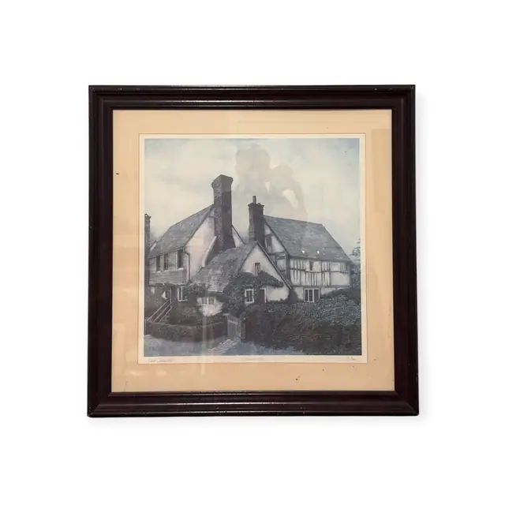
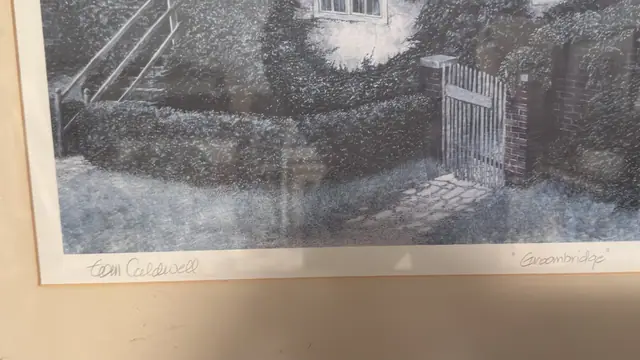
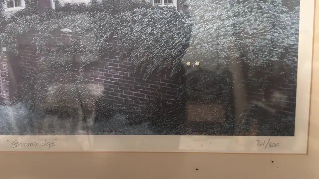
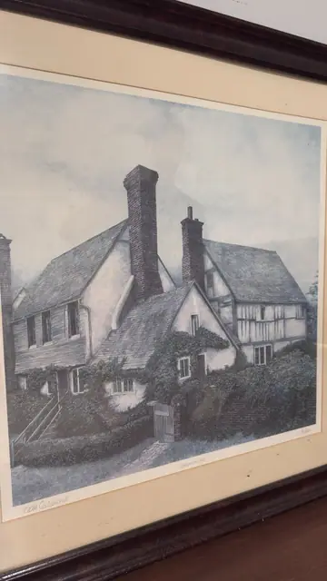
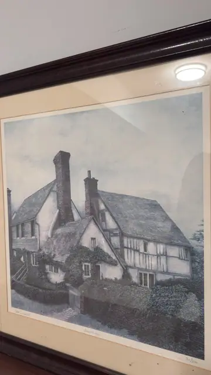

Paintings & Prints
Groombridge, Signed Tom Caldwell Cottage Print, Numbered Edition, Framed, 1989
Tom Caldwell · 1989
Price Upon Request





About the Item
Tom Caldwell. A finely detailed view of a Kentish cottage: a steep thatched roof and a tall brick chimney stack rise above white-plastered walls crossed by dark half-timbering, and a clipped hedge, brick pier and picket gate run along the front. The whole image is built from a dense stipple of tiny strokes that gives the foliage a frosted, granular look. The palette is cool and almost monochrome - slate blue-grey, chalk white, muted brick red and pale sky. Wide cream mat in a deep mahogany-toned moulding under glass. Medium: offset fine-art reproduction after an egg tempera painting, pencil signed and numbered. Signed lower left margin, in pencil, reading "Tom Caldwell". Edition: 761/1100 (edition size 1100 plus 110 artist's proofs, printed 1989). Accompanied by a certificate: Certificate giving Title: Groombridge / Artist: Tom Caldwell / Year printed: 1989 / Edition Size: 1100 / Artist Proofs: 110, hand-numbered 761/1100 - photographed as IMG_8853, which was filed with listing A084. Inscribed on the reverse or mount: Tom Caldwell (pencil, lower left margin); "Groombridge" (pencil, lower right margin, in quotation marks); 761/1100 (pencil, lower right margin). Condition: Mat lightly soiled with a few small dark specks at the lower edge; print itself appears clean; heavy glass glare in the detail shots.
Details
- Creator:
- Tom Caldwell
- Creation Year:
- 1989
- Dimensions:
- Height: 30.25 in (76.84 cm)
Width: 29.5 in (74.93 cm)
outside of frame - Medium:
- offset fine-art reproduction after an egg tempera painting, pencil signed and numbered
- Edition:
- 761/1100 (edition size 1100 plus 110 artist's proofs, printed 1989)
- Period:
- 20Th
- Condition:
- Offered in the condition shown in the photographs.
- Reference Number:
- VO-132
- Documentation:
- Certificate giving Title: Groombridge / Artist: Tom Caldwell / Year printed: 1989 / Edition Size: 1100 / Artist Proofs: 110, hand-numbered 761/1100 - photographed as IMG_8853, which was filed with listing A084.
- Gallery Location:
- Tom Caldwell (pencil, lower left margin); "Groombridge" (pencil, lower right margin, in quotation marks); 761/1100 (pencil, lower right margin)